Upper environment detail
Leaves bend on native pixels. Lights fade smoothly while their positions snap to native pixels. The waterfall overlay is restricted to the existing water.
Small correction
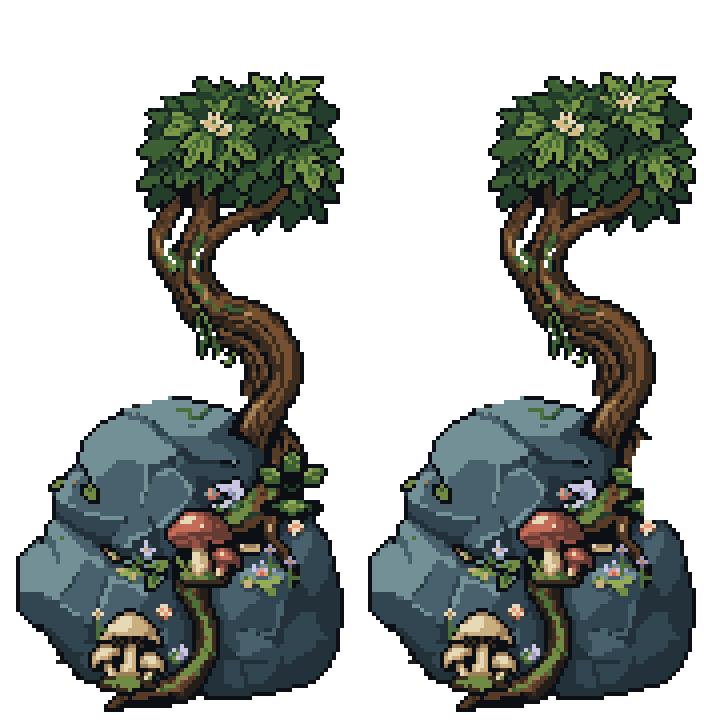
The stray green sprig is removed on a copy. Brief leaf gusts, different spirit silhouettes and independent fade/drift timings bring the forest to life. Upper wisps, gold fireflies and two formerly baked-in blue motes now move; the waterfall has a faint descending shimmer.
Actual Unity art-review captures, with static character and UI samples. The original scene and all prior artwork remain intact. No production gameplay integration or merge. The board, portrait, controls and text retain their exact pixels and placement.
Play to see differently timed fades and several quiet gusts. The water motion is deliberately subtle. The video stops at the end; the separate rhythms do not share a 24-second loop.
Leaves bend on native pixels. Lights fade smoothly while their positions snap to native pixels. The waterfall overlay is restricted to the existing water.



720 × 1360 PNG · 1440 × 2720 PNG · Reduced-motion still
Native first poses beside enlarged pose previews. These isolated GIFs show the drawings; Unity controls the longer rests, fades and staggered timings.
18 × 19 native · 4 poses · 4 colors
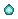
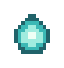
24 × 28 native · 4 poses · 4 colors
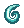
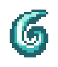
38 × 40 native · 4 poses · 4 colors
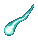
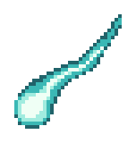
71 × 61 native · 5 poses · 15 colors
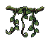
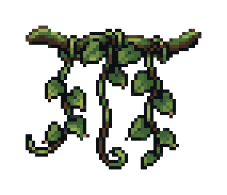
71 × 61 native · 5 poses · 15 colors
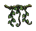
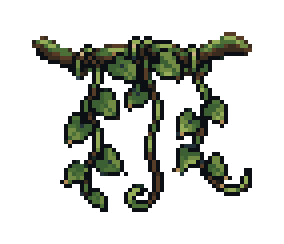
46 × 55 native · 5 poses · 10 colors
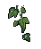
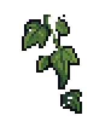
Raw PixelLab · 16 × 16
Raw PixelLab · 24 × 24
Raw PixelLab · 32 × 32
Mote — too scattered
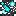
Ribbon — creature-like shape
43 native PNG poses round-trip through 11 LibreSprite sources exactly. Binary source transparency and canvas clearance pass. Unity captures cover 288 samples, 24 seconds, 720 × 1360 and 1440 × 2720; pixel doubling is exact. Board, portrait, frame and HUD pixels stay unchanged throughout. Paused and reduced-motion checks pass.
6,746 previous art, scene, script, resource and settings files remain unchanged. Five PixelLab generations spent (677.20 → 672.20); no USD credits used.
Full report · Pixel verification · Motion checks · Unity test result · Usage
Ready for your review. Nothing merged.